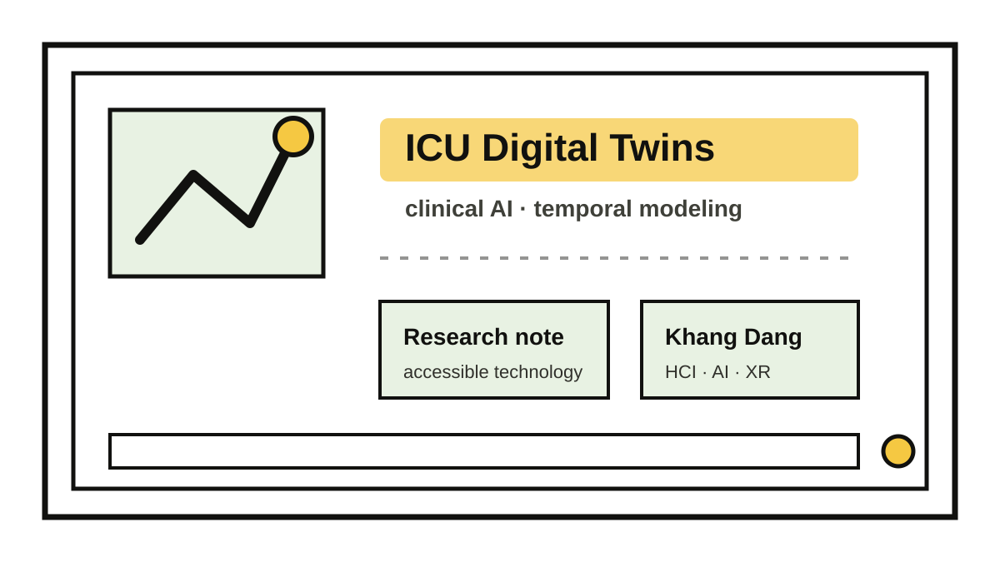

In critical care, prediction alone is rarely enough. Clinicians need to understand how a patient state is changing, what signals matter, and how possible interventions might affect future trajectories. That is why digital twins are interesting: at their best, they connect monitoring, modeling, forecasting, and decision support around a patient-specific representation.
My postdoctoral work explores this space through ICU temporal data, machine learning, and state-action modeling. The technical questions are important, but so are the human questions: what decisions are actually being supported, what uncertainty should be shown, and how should a model fit into clinical workflow?
A useful clinical AI system should be accurate, interpretable enough for its purpose, and designed around the people who must trust, question, and act on it.